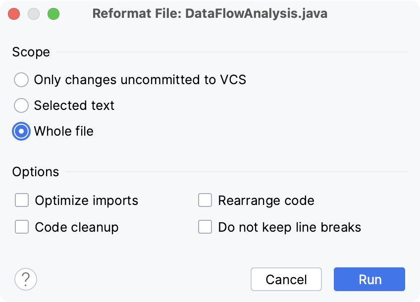

Atelier 08
Dans cette séance de laboratoire, vous pratiquerez les outils de linter et d'analyse de code abstrait, et comment les utiliser efficacement en tant que plugin IntelliJ ou Maven. Dans cette séance de laboratoire, vous travaillerez avec le code de BookStore.
Checkstyle
Checkstyle est un linter classique, c'est-à-dire qu'il garantit que le code respecte les conventions de codage, par exemple celles d'une entreprise.
Scans basés sur l'IDE
- Accédez à Moodle et regardez les instructions d'installation pour le plugin checkstyle.
- Après vous être connecté, la capsule vidéo est disponible dans le dossier
08
À votre tour
- Clonez le projet BookStore :
git clone https://github.com/m5c/BookStoreInternals/ - Ouvrez le projet cloné dans IntelliJ
- Inspectez le projet, vous devriez trouver un fichier
google_checks.xml - Créez un rapport checkstyle, c'est-à-dire installez le plugin checkstyle, sélectionnez manuellement les vérifications de Google et laissez-le s'exécuter sur toutes les classes et inspectez le rapport.
- Introduisez une erreur checkstyle, par exemple en ajoutant un saut de ligne avant un nom de méthode
- Exécutez à nouveau checkstyle et vérifiez qu'il fournit un message d'avertissement pour la ligne modifiée
Mise en forme basée sur l'IDE
- Les corrections de mise en forme manuelles sont lentes et fastidieuses.
- Révisez la capsule vidéo checkstyle et revoyez comment configurer IntelliJ pour utiliser
google_checks.xmlcomme configuration de mise en forme.
À votre tour
- Configurez votre IntelliJ pour utiliser
google_checks.xmlcomme configuration de mise en forme. - Ajoutez à nouveau des problèmes de mise en forme à n'importe quel fichier Java dans le BookStore, par exemple en ajoutant des sauts de ligne ou en modifiant l'indentation.
- Ouvrez le tableau de référence des combinaisons de touches d'IntelliJ (également disponible dans
Aide -> PDF des raccourcis clavier)- Trouvez la combinaison de touches pour formater le code
- Utilisez la combinaison de touches pour formater le code
- Vous pouvez ajouter la touche
Shiftà la combinaison, pour obtenir un menu de mise en forme supplémentaire, assurez-vous que toutes les cases "Options" sont cochées :  - Vérifiez que vous pouvez corriger tous les problèmes de checkstyle dans un fichier en utilisant la combinaison de touches.
Plugin checkstyle Maven
- Checkstyle n'est pas seulement un plugin IDE, mais aussi un plugin Maven.
- Ajouter checkstyle en tant que plugin Maven est aussi simple que d'ajouter le plugin au fichier de configuration
pom.xml.
Pourquoi le plugin Maven est-il préférable au plugin IDE ?
Les plugins IDE dépendent du développeur pour être utilisés ou ignorés. Mais même si tous les développeurs se soucient de la qualité du code, on peut facilement oublier d'exécuter un plugin avant de partager un nouveau code. Un plugin Maven est beaucoup plus difficile à ignorer, surtout s'il est configuré pour rejeter systématiquement le code insuffisamment commenté ou analysé.
À votre tour
- Inspectez le
pom.xmlde BookStore. Pouvez-vous identifier où le plugin a été ajouté ? - Une fois de plus, modifiez un fichier Java du projet BookStore, par exemple l'indentation ou quelques sauts de ligne.
- Exécutez
mvn clean package. La construction devrait échouer. - Inspectez soigneusement la sortie. Les erreurs Maven correspondent-elles aux lignes que vous venez de modifier ?
- Utilisez la combinaison de touches de mise en forme d'IntelliJ pour formater à nouveau votre code.
- Reconstruisez, en utilisant
mvn clean package. Vérifiez que le projet peut maintenant être construit.
Complexité
En classe, j'ai brièvement mentionné une autre métrique de code : la complexité.
Plugin de complexité IDE
- Le plugin de complexité IDE vous donne un retour immédiat sur la complexité de votre code.
- Pour chaque méthode, le plugin ajoute un court pourcentage et une estimation qualitative de la complexité.
À votre tour
- Installez le plugin de complexité de code
- Redémarrez votre IDE
- Ajoutez la méthode suivante à n'importe quelle classe de votre projet BookStore :
public static boolean test(int input) {
int x = -1;
boolean[] yyy = new boolean[input];
while (!(x > input - 2)) {
if (input % (x + 2) == 0) {
yyy[x + 1] = true;
if (input == -1) {
return false;
}
} else {
yyy[x + 1] = !true;
}
x++;
}
for (int k = input - 2; k >= 1; k--) {
if (yyy[k] == true) {
return false;
}
}
return true;
}
- Localisez où le plugin de complexité vous donne un retour.
Qu'est-ce qui cause le retour 125%, légèrement complexe ?
Il existe différentes métriques de complexité. Le plugin de complexité évalue en fonction de la Complexité Cognitive, une métrique qui évalue la difficulté de compréhension du code. Plus il y a d'instructions if/else ou de chemins d'exécution possibles, plus la méthode est complexe. Notez que le nommage des variables n'a pas d'effet.
- Inspectez diverses méthodes de votre implémentation de Halma et voyez si vous en avez qui sont considérées comme "très complexes".
- Appliquez les techniques de refactorisation présentées dans le laboratoire précédent, et améliorez la note de complexité de vos méthodes Halma.
Bonus : PMD
PMD (Project Meets Deadline) est probablement l'analiseur de code statique Java le plus notoire de tous.
- PMD offre une grande liberté de configuration, de la détection de mauvais codage, à l'absence de documentation, en passant par l'identification de graves failles de sécurité ou de performance.
- PMD est disponible en tant que plugin IDE et plugin Maven.
Configuration
Ajoutez le plugin suivant à votre pom.xml :
<!-- Analyse de code statique PMD -->
<plugin>
<groupId>org.apache.maven.plugins</groupId>
<artifactId>maven-pmd-plugin</artifactId>
<version>3.13.0</version>
<configuration>
<rulesets>
<!-- liste complète : bestpractices, codestyle, design, documentation, errorprone, multithreading, performance-->
<ruleset>/category/java/bestpractices.xml</ruleset>
</rulesets>
<!-- failOnViolation est en fait vrai par défaut, mais peut être désactivé -->
<failOnViolation>true</failOnViolation>
<!-- printFailingErrors est assez utile -->
<printFailingErrors>true</printFailingErrors>
<linkXRef>false</linkXRef>
</configuration>
<executions>
<execution>
<goals>
<goal>check</goal>
</goals>
<!-- Force l'exécution automatique du but pmd:check durant la phase de package -->
<phase>package</phase>
</execution>
</executions>
</plugin>
Invocation :
- Le plugin est configuré pour s'exécuter automatiquement à chaque
mvn clean package. - Pour exécuter l'analyse de code sans la phase de
packagecomplète, tapez :mvn clean pmd:check.
Ajustements
La configuration par défaut ci-dessus ne teste que les violations de
style de code. Pour obtenir la gamme complète de retours, activez la
liste complète des rulesets :
<ruleset>/category/java/bestpractices.xml</ruleset>
<ruleset>/category/java/codestyle.xml</ruleset>
<ruleset>/category/java/design.xml</ruleset>
<ruleset>/category/java/documentation.xml</ruleset>
<ruleset>/category/java/errorprone.xml</ruleset>
<ruleset>/category/java/multithreading.xml</ruleset>
<ruleset>/category/java/performance.xml</ruleset>